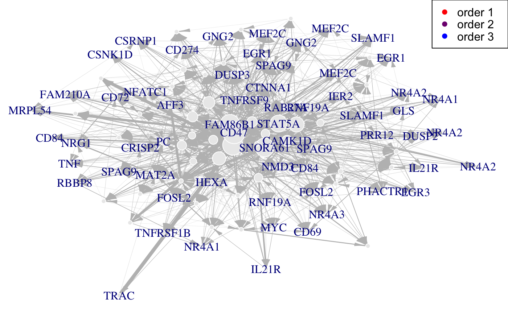

geneNeighborhood-methods.RdFind the neighborhood of a set of nodes.
geneNeighborhood(net,targets,...)
| net | a network object |
|---|---|
| targets | a vector containing the set of nodes |
| ... | Optional arguments. See plot options. |
The neighborhood of the targeted genes.
data(Selection) data(infos) #Find probesets for EGR1 pbst_EGR1 = infos[infos$hgnc_symbol=="EGR1", "affy_hg_u133_plus_2"] gene_IDs = infos[match(Selection@name, infos$affy_hg_u133_plus_), "hgnc_symbol"] data(network) #A nv value can chosen using the cutoff function nv=.11 EGR1<-which(Selection@name#> Error: <text>:12:0: unexpected end of input #> 10: nv=.11 #> 11: EGR1<-which(Selection@name #> ^# NOT RUN { # }#> FALSE#> [[1]] #> [[1]][[1]] #> + 1/102 vertex, from b600943: #> [1] 25 #> #> [[1]][[2]] #> + 2/102 vertices, from b600943: #> [1] 26 10 #> #> #> [[2]] #> [[2]][[1]] #> + 1/102 vertex, from b600943: #> [1] 25 #> #> [[2]][[2]] #> + 43/102 vertices, from b600943: #> [1] 26 10 3 4 7 8 12 13 14 15 17 18 19 20 21 23 24 25 28 29 30 31 33 34 35 #> [26] 36 38 39 58 59 60 65 71 72 76 82 84 85 86 89 90 93 97 #> #> #> [[3]] #> [[3]][[1]] #> + 1/102 vertex, from b600943: #> [1] 25 #> #> [[3]][[2]] #> + 97/102 vertices, from b600943: #> [1] 26 10 3 4 7 8 12 13 14 15 17 18 19 20 21 23 24 25 28 #> [20] 29 30 31 33 34 35 36 38 39 58 59 60 65 71 72 76 82 84 85 #> [39] 86 89 90 93 97 41 55 61 64 68 70 74 79 98 2 9 16 47 48 #> [58] 73 75 77 80 81 92 102 62 96 42 66 87 44 45 46 54 57 69 78 #> [77] 91 100 43 53 67 49 50 88 94 56 95 83 101 37 40 11 5 22 32 #> [96] 27 6 #> #>